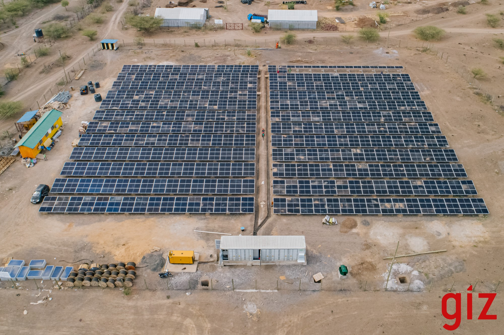

Kenya's Largest Solar Mini-Grid
Skills Demonstrated
As the Director of Engineering for Renewvia Solar Africa, I worked with Douglas Cox to lead the construction of Renewvia's expansion project in Kalobeyei Refugee Settlement. In 2022, we expanded the generation system to 541 kW with grant assistance from the Kakuma-Kalobeyei Challenge Fund and GIZ, and extended power lines throughout the villages, bringing electricity to over 2700 customers.
During the construction phase, I helped oversee the project's progress and ensured that it met our high standards for safety, quality, and efficiency. With my technical expertise and attention to detail, I worked with the team to implement best practices and ensure that the project was completed on time and within budget.
The Kalobeyei Settlement mini-grid is Kenya's largest and requires a high degree of automation and remote monitoring. Here, my computer science and artificial intelligence background helps guarantee our team is well-equipped to expand our system and coverage while maintaining the same level of quality and efficiency.
Renewvia uses a fleet of smart meters to access real-time data on customer usage, power quality, and payment history. This data enables us to identify long-term trends, develop intelligent predictions of customer behavior, and make data-driven decisions that have improved the system's overall performance.
Our customers rely on us for reliable and convenient energy access, and my team and I are dedicated to meeting their needs. Renewvia employs local site agents and technicians who are ready to address any customer concerns. I am honored to continue to lead the Renewvia engineering team to provide renewable energy solutions that improve lives and build a sustainable future.
